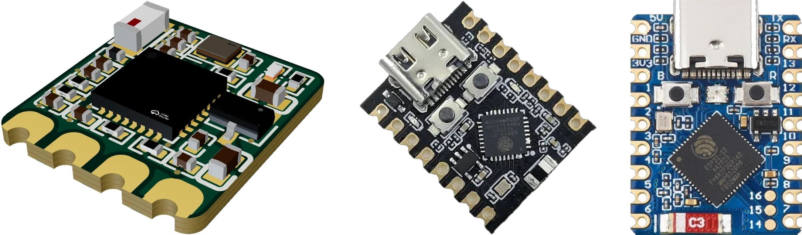
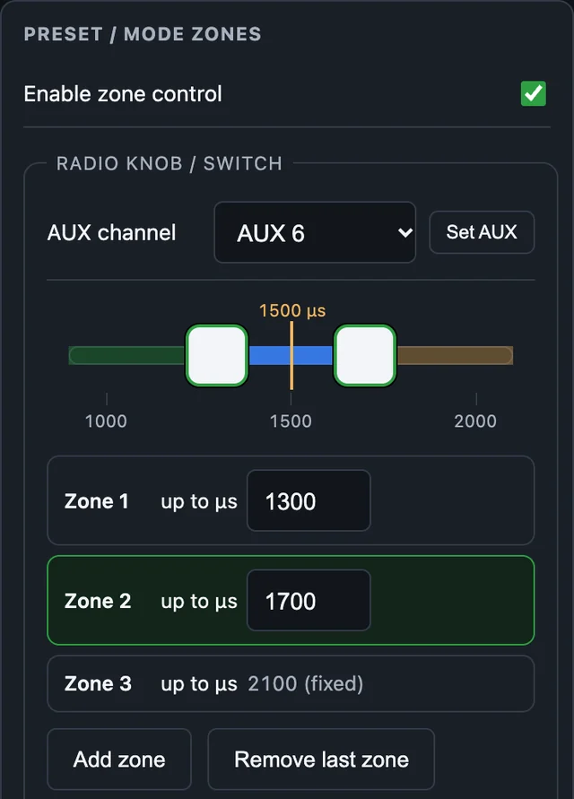
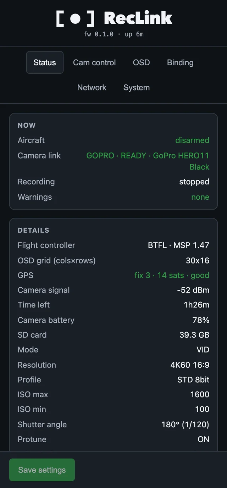
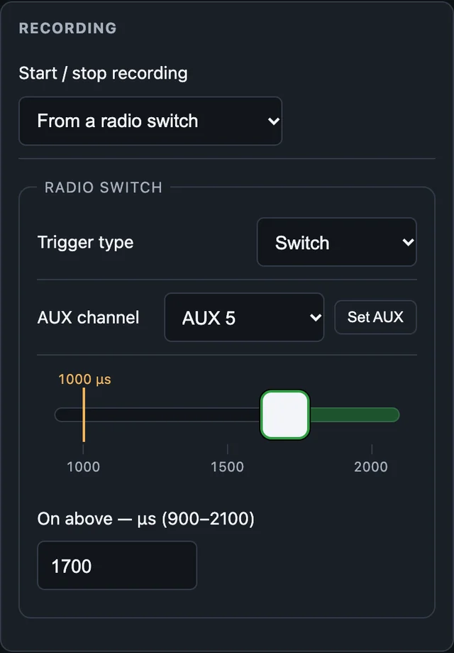
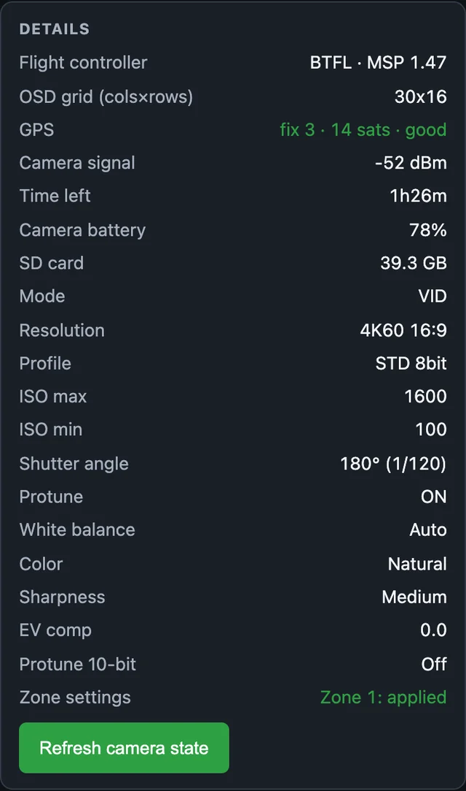

RecLink camera board
In development0.68 g, 12 × 13 mm, four solder pads: GND, 5V, TX and RX.
FC TX to RX, FC RX to TX
Pre-release 0.2.1. Tested on the bench, never in flight.
Open-source ESP32 firmware that records on arm or from a radio switch and shows camera status on your OSD. It never touches flight, and it fits a 0.68 g board.

RecLink reads from the flight controller and writes OSD text. Nothing it sends can change how the quad flies.
It writes OSD text and nothing else. The code refuses arming, RC and PID commands.
The board is back in about 300 ms and the quad stays fully flyable.
The access point is down within 100 ms. In flight only Bluetooth runs.
Commands go out and are confirmed afterwards, so a slow camera stalls nothing.
One small board sits between Betaflight and the camera. It reads arm state, switches and GPS time over MSP, and talks to the camera over Bluetooth LE.
Four lines of 16 characters, built from 22 tokens you place yourself.
Arm, a switch, either, or both. The camera confirms every command.
A 2 to 6 position switch picks resolution, frame rate and lens on a GoPro.
A momentary switch adds a HiLight tag on a GoPro, a Quick-Switch press on a DJI.
Any mix of GoPro and DJI. At power-up it joins the strongest signal.
Time comes from the flight controller's GPS, so footage is dated correctly.
Digital mode keeps to the glyphs the DJI goggles can draw.

Join the RECLINK Wi-Fi while disarmed. Pair cameras, build zones, lay out the OSD and update the firmware. No app, no cloud, no account.


Two brands over Bluetooth LE. What is verified and what is not.
Open GoPro BLE
Record, OSD telemetry and zones work on a HERO11 Black. The other models use the same API.
Open GoPro BLE
Expected to work, but it may need setting ids this firmware does not use yet.
DUML over BLE
Implemented from DJI's open-source demo. No DJI camera has been tested yet.
HERO8 and older have no Bluetooth API and are not supported.

Tested: bench-tested on hardware. Unconfirmed: implemented, awaiting a hardware test.

The same firmware runs on all three. You do not need the RecLink board.
0.68 g, 12 × 13 mm, four solder pads: GND, 5V, TX and RX.
FC TX to RX, FC RX to TX

A tiny, cheap dev board. Flash it from your browser over USB.
FC TX to pin 7, RX to pin 6

Its RGB LED shows the status in colour. Flash it over USB.
FC TX to pin 4, RX to pin 5